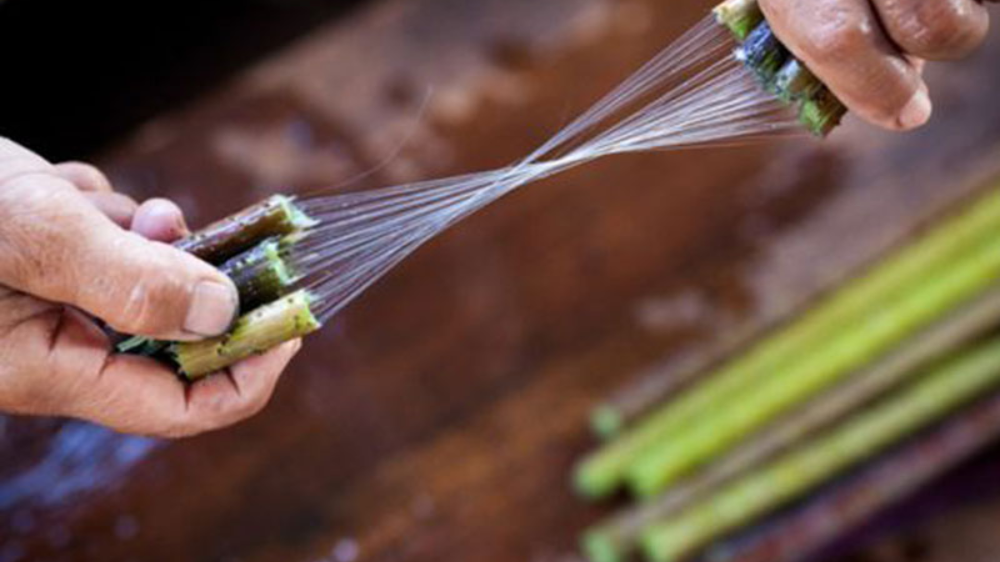

ecowear
"At EcoWear, We Celebrate Sustainable Fashion Rooted in Tradition — Discover How Ethical Choices Preserve Culture and Protect Our Planet"
Fast fashion harms the environment and exploits workers.
Rapid production of cheap clothing causes pollution, waste, and
poor labor conditions. Consumers are now seeking sustainable alternatives.

Traditions keep cultures alive, and sustainable local brands help preserve them. These businesses use eco-friendly methods, support artisans, and promote ethical production—unlike wasteful fast fashion. By choosing handmade, locally sourced goods, we protect heritage and the planet. Supporting such brands ensures traditions thrive while fostering responsible consumption.
What's different when you wear locally made clothes?
- Unlike mass-produced fast fashion, locally crafted garments support artisans, reduce environmental harm, and preserve cultural traditions
- You get higher quality, unique designs, and a smaller carbon footprint
- Each piece carries a story of craftsmanship, often using sustainable materials and ethical labor
- Wearing local means you support local businesses. When you support local small businesses, it boosts local economies, and creates jobs
- You get personalized service and potentially unique products which makes you feel special